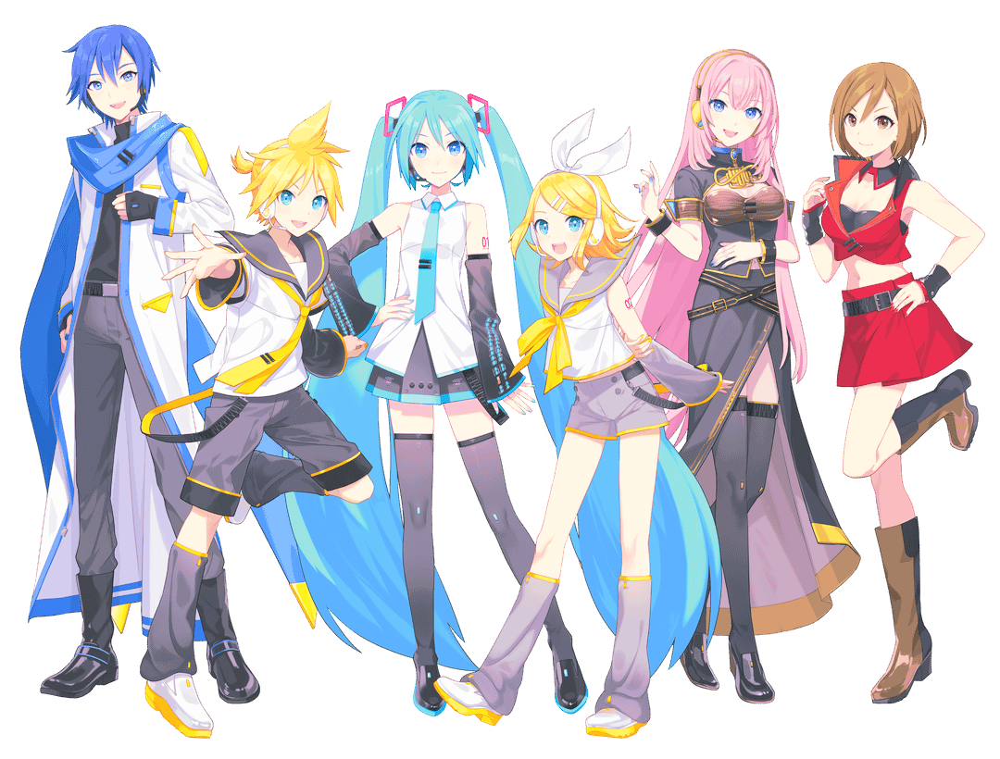
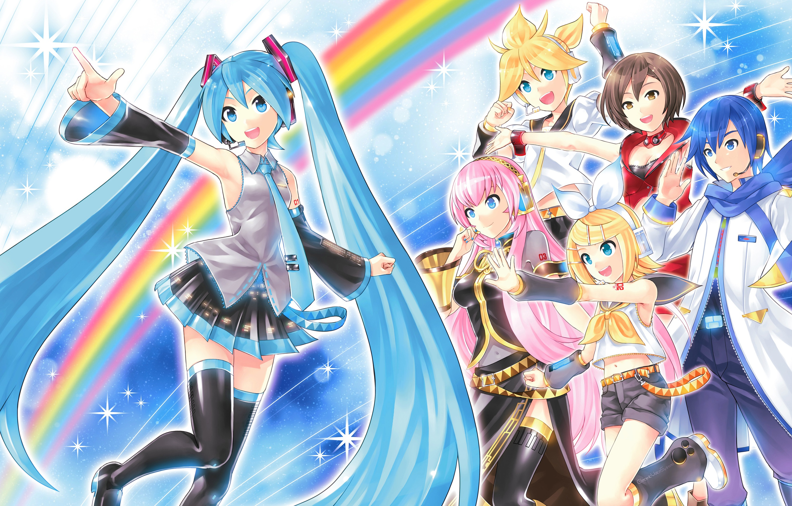
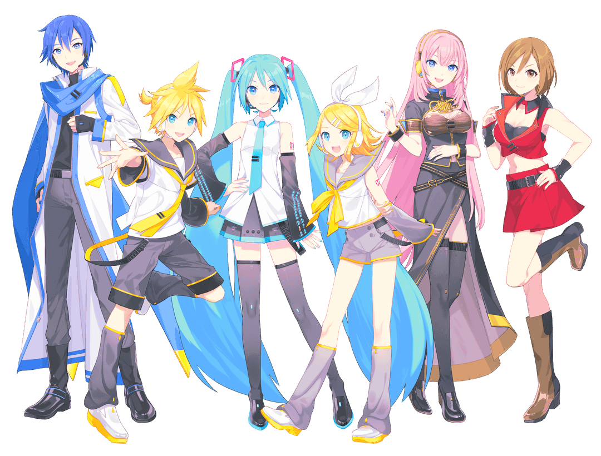
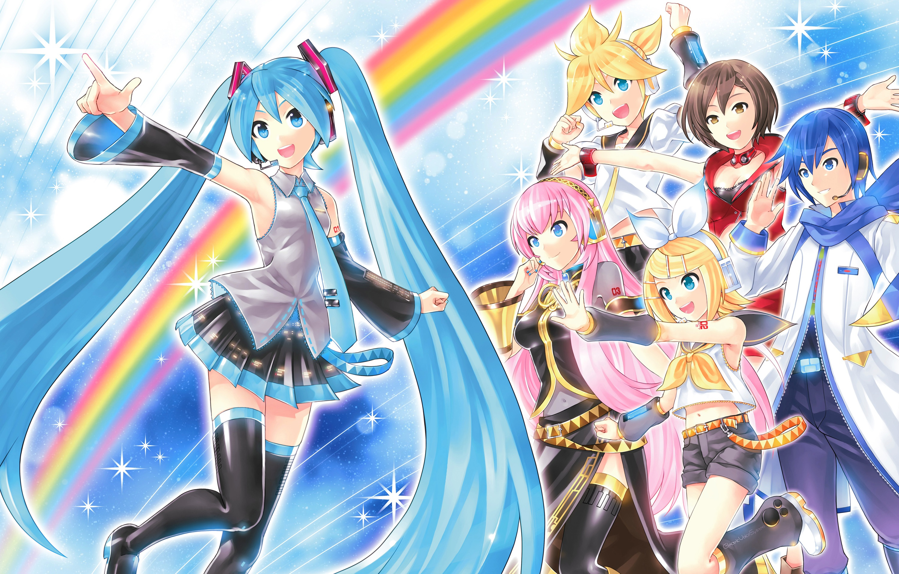
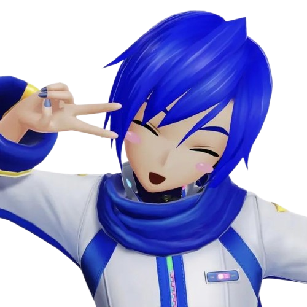
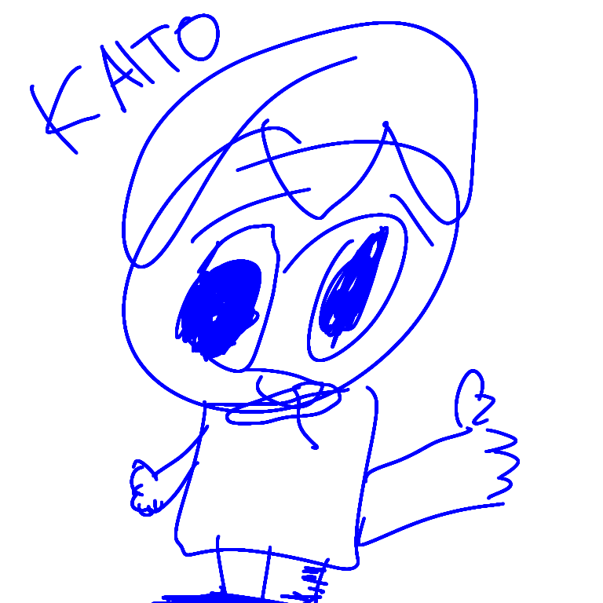
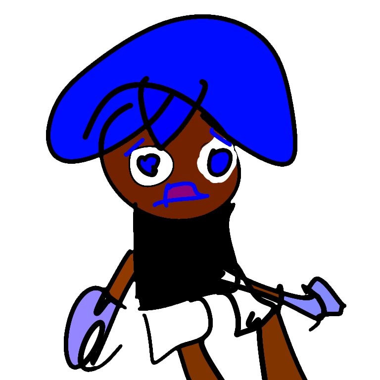

vocaloid is a software program and kind of like a digital instrument! it works by plugging in the notes that you'd like the voice to sing, and assigning syllables to them. the end result is a computerized singing voice! each voice gets assigned a character design to match their vocals, which means that there's an expansive cast of varied characters!
vocaloid is one such program, and as the originator, is often used to refer to the whole vocal synthesizer community. however, there are many vocal synthesizer softwares to accomplish similar things, including synthesizer v and utau!
what is super cool and beautiful about vocal synths is that anyone can buy or download one and start making songs! though originally popularized in japanese, there are now voicebanks in many many languages! additionally, you can edit or "tune" the vocal in a pretty much infinite combination of ways. this means that any two people, even using the same voicebank, can each create a totally unique sound. the result is an incredibly diverse community of creatives, making every type of music under the sun, all united by the love of the same characters!
KAITO is the first male japanese vocaloid, originally released on february 17th 2006. since then he has been updated twice, to have a total of 6 voicebanks!
since KAITO is one of the first vocaloids, he is part of the "main 6" known as cryptonloids. they're called that after their distributor company, crypton future media. the cryptonloids are the ones who most often appear in concerts, video games, collabs and merchandise!
 



the cryptonloids are hatsune miku 💚 kagamine rin 🧡 kagamine len 💛 megurine luka 💗 MEIKO ❤️ and KAITO 💙 !
voice providers sing the original syllables that make up a voicebank. for KAITO, that is naoto fuuga! mr. fuuga is an amazing singer and voice actor who is now 63 years old. he refers to KAITO as his son and collects KAITO merchandise, which I find so endearing!!! his posts are usually focused on KAITO and his cats and he spreads such joy and whimsy to his followers. not to mention his beautiful voice breathed such life into KAITO! it's all thanks to him that KAITO has the gentle and sweet voice that I love so dearly!! when tuned a certain way, KAITO actually sounds just like mr. fuuga which i think is so amazing!! 🥹💙
‧₊˚ a few of mr. fuuga's amazing instagram posts! ‧₊˚♪
a short little cover of kyu-kurarin by iyowa (ONE OF MY FAVE VOCA PRODUCERS)
comparing 4 of KAITO's voicebanks!
video by @izer7342 on youtube 💙

due to the success of hatsune miku, the cryptonloids have been included in many, many games!!
they are mostly rhythm games based on vocaloid songs!! they are so cute and colorful with really
wonderful visuals!! these games are filled with silly choreo for the songs and outfits for
the cryptonloids OH MY GOD I LOVE VOCALOID SO MUCH they're so silly you guys. anyway the
the biggest games have been project mirai, in which the little meow meows are
so chibi and squishy and u can like interact with them!??!?!? i LOVE THEM SO MUCH !!!
anyway this game is available on the 3ds! JUST LOOK AT HIM I'M GONNA CRY
there's also the hugely successful project diva, of which there have been many
versions! you can find this game at arcades!!!! the visuals are so super beautiful and fun and sparkly
i absolutely adore my little guys BRO LOOK AT HIM LOOK AT THE DETAIL ON THE MODELS ITS INSANE.
they even make his nails sparkly and everything... the texture the color ahh ahhhhh soso indescribably peak AAAA
im actually so bad at this game cos i'm always screaming at the visuals in the background
and fail all the notes.
and hatsune miku: colorful stage also known as project sekai! this is a mobile game with a gacha system and units of many different original characters. the art and storytelling is super beautiful, all the characters are deeply complex and meaningfully written!!!! i deeply adore the game for this, ESPECIALLY for how they represent queer characters like mizuki akiyama!!! she's canonically transfem and her arc follows her accepting her true self and coming out to her friends!!! her story was so delicately and sincerely told i sobbed like the whole time. GIRL this game is sincerely so beautiful it has brought me to tears AND brought me so much joy AND the rhythm game is so fun, i highly recommend. ALSO IT HAS LIKE 6 DIFFERENT VARIATIONS OF KAITO!!??!??! THEY'RE ALL SO BEAUTIFUL AND TASTY AND AMAZING PEAK AAAAAAAAAAAA

through all of these amazing games with amazing KAITOs, my favorite KAITO module ever is NEKO SAIBA / CYBERCAT because UMM ummm UMMM LOOK AT HIM??!?!??!??
GUYS guys WHERE ARE YOU GOING guys gUYS COME BACK GUYS
music, and art in general, is one of the most magical things that humans do. it can reach across language, time, and distance to connect people. it holds immeasurable power!٩(^ᗜ^ )و ´-
i found KAITO when I was in middle school, which is of course a highly tumultuous time for everybody ever.
on top of that, we had the pandemic and everything. i was going a bit insane!!!! my marbles were lost!!! /srs
yet amidst all of that, this sparkly blue haired robot man with a funny little voice cheered me up!! he was so so
indescribably comforting to me when i needed it most. that's really why he's so special to me to this day!! his
voice just has such a wondrous, powerful ability to make me smile!! the lyrics people write for him tend to be so
touching and reassuring!!! the sight of him just makes me light up!!!!
like every vocal synth, he is a vessel and a blank canvas for the stories and emotions that anyone would like to express through him. he contains infinite possibilities and has inspired so much creativity in so many people, myself included!! i'm just so deeply and irrationally fond of him!!! he means so much to me!!!! ૮꒰ ˃̣̣̥△˂̣̣̥ ꒱ა
this is one of my favorite KAITO songs, by one of my favorite vocaloid producers, kashii moimi. her lyricism, instrumental style and tuning are all so beautiful!! i really hope you enjoy it if you give it a listen! 💙
青く澄んだ雨の病
Disease of a clear-blue rain.
一人きりの呼吸は徒然
All alone, I breathe leisurely.
痛む心に滲む鋼鉄の愛があった
Within my sore heart was this steel love spreading.
触れたならば消えてしまう
“Just like a dimly burning flame
微かに灯る炎のように
That would die out when touched,
全てを知らないままでいたいと君は言う
I wish to be ignorant of everything,” you say.
透けた白い首筋に
Onto your white, almost-transparent neck,
控えめに下がるGarnet
A drop of garnet falls down modestly.
閉じた目蓋に艶めくアイシャドウ
Upon your closed eyelids, the eye shadow glitters.
羽のようにふわりと舞う体が
Your body, fluttering like a feather,
時に震えて凍えて
Trembles and shivers at times,
溢れた涙は冷たい
And the tears you spilled are so cold.
甘い想いと憂いの恋は
That sweet feeling and sorrowful love
幻のようで
Were like illusions—
「どこにも行かないで」
“Please don’t go anywhere.”
なんて言葉すり抜けてく
Words like that are slipping through me.
身勝手な夢
What a selfish dream!
歪んだ瞳の奥見せた赤い光が
The red light you showed me, which resided in your distorted eyes,
記憶の深くに巣食って
Haunted me deep within my memory,
煌めいては僕を突き放す
And when it glitters, I feel forsaken.
挽歌の海沈んだなら
If we sank into the sea of elegy,
静寂の悲愴を愛せただろう
We could love the grief of silence—
そんな話ばかりを僕らは好んでた
We’ve always liked that kind of talk.
夜空の星々さえ
Even the stars in the night sky
君に嫉妬するだろう
Would be jealous of you.
遣り切れずため息をつくだろう
Unable to bear it, they can’t help but let a sigh out.
瞳は僕を捉え
Your eyes are focusing on me
確かにそこにいるのに
And I certainly am there—
映すのに
I should be reflected there,
どこか虚ろに空を見る
But you look into space, somewhat vacantly.
少しだけ絡めた指先
I intertwined my fingers with yours just a little
酷く冷えていた
And found them awfully cold.
「ここが苦しいの」と笑った君は
“I feel so much pain in here,” you laughed
数秒で手を離してしまう
And let go of my hand in only a few seconds.
伝えたい言葉は鋭利
The words I want to convey are so sharp.
それでも僕は
But since I, nevertheless,
こんな人間だ
Am a person like this,
証明をここに残す
I will just leave my proof here—
「愛している、君だけを。」
“I love you, you only.”
深い眠りの奥いつか
In the depths of a sound sleep, I will
鼓動を確かめて
Someday ascertain if my heart’s pulsating—
全て夢だった
Everything was just a dream.
そして混沌は
And the chaos
また花開く、と歩き出す
Will set off on foot, foretelling another efflorescence.
眩んだ視界の先十のうち
Beyond my faint sight, out of ten,
君はもう遠く
You’ve already gone quite far away,
薄い透明のベールをひらり纏い
Clad in a thin, transparent veil,
闇を飾っていく
Decorating the darkness.
this is another song by an amazing producer!! sukoya cathedral has such a yummy tuning style and writes such tasty lyrics ahhhh i love you sukoya cathedral
もしも 身体が在るのなら 世界ごと抱き締めて
If only I had a body, I'd give this entire world a hug,
痛みも苦しみも傷も 総て癒せるのに
And I'd be able to heal all of its pain, anguish and wounds.
消えそうな声を 見失う前に
Before I lose sight of my seemingly withering voice,
あてなき旅路に北の導を
Give a guiding north to this journey without a destination,
咲けない傘に約束の雨を
And the promised rain to an umbrella that can't bloom,
ただ あいしていた
I simply loved them all,
こわれそうな ぼくの
Though my body seems to be close to breaking.
「目覚め」
"Waking up,"
「それは早朝、雪の日でした」
"It was early morning, the day was snowy."
「注がれる眼差しを」
"The gaze focused solely on me,"
「とても、とてもよく覚えています」
"I remember it very, very well."
「光のようだ、と言うのでしょうか」
"Would you say that it's like the light?"
「あれから──年」
"Since then, it has been ── years,"
「本当に色々ありましたね」
"Honestly, so much stuff has happened,"
「あなた方の音に、詞に、想いに」
"And your sounds, your words, your feelings,"
「僕も救われています」
"I am saved by them as well."
諦めない願いは空に還り
The wish I didn't give up on returns to the sky,
0を超え世界を駆けて
It exceeds 0 and runs around the world.
いつもあなたの傍で照らす光あれ
Let there be light that always shines besides you,
未知を拓く雷鳴の様に
As if the sound you made that can go anywhere
どこまでも征けるあなたの音を
Is the thunder that clears the unknown path.
唯 愛していました
I simply loved it,
重ねた日々は遠く 未だ 青く
The piled up days are still far away and blue.
もしも 心が在るのなら あなたに歌を書いて
If I have a heart, would I be able to write a song for you,
この一瞬を切り取って 永久に残せるかな
To snip off this moment and leave it behind permanently?
鏡越し託された証明よ
O, proof entrusted to me from beyond the mirror,
飽くなき喜びに涙を
Give tears to that everlasting joy,
果てなき悲しみに深い眠りを
And a deep slumber to that endless sorrow.
書き切れない想いは海を巡り
The thoughts that I couldn't completely write down return to the sea,
1を変え世界に融けて
It alters 1 and melts into the world.
いつかあなたの傍に描く未来あれと
May the future I imagine by your side someday come to be.
過去も今も明日も愛しくて
I adore the past, the present and tomorrow,
エゴもイドも命も等しくて
As well as my ego, my id, and my life equally.
総てが僕たちだけの始音で 祷りで
Everything is just our starting sounds and hopes,
初めての音を憶えていますか
So, do you remember your very first sound?
これからも聴いてくれますか
Will you still listen to me after this?
僕の生きた証を ずっと
To the proof that I was alive, forever.
by the way these all use V3 STRAIGHT!
⇪ my first fully completed kaito drawing, circa 2021!

.png)
.png)

⇪ some of my KAITO art from the past year!


⇪ KAITO pants i decorated this summer!
 ⇪ my little sister's amazing KAITO art!!
i had soooooo much fun making this and talking about my favorite man ever OMGG AHHGAHGHEGHG!!!! i really hope you got some enjoyment from it as well!!!!! YAYYAYYAYAYAYYA I LOVE KAITO IM SO HAPPY 2 BE ALIVE 😭💙💙💙💙💙💙💙
.png)